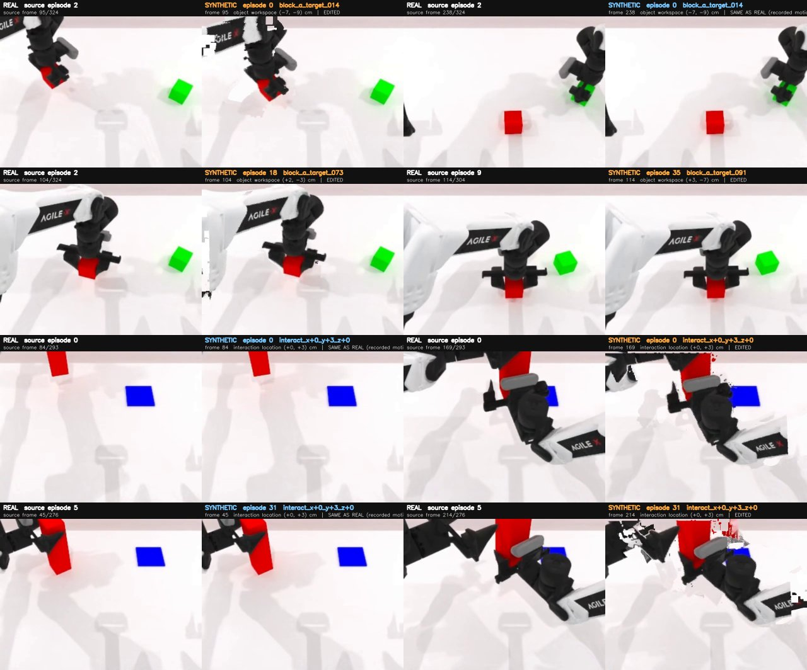
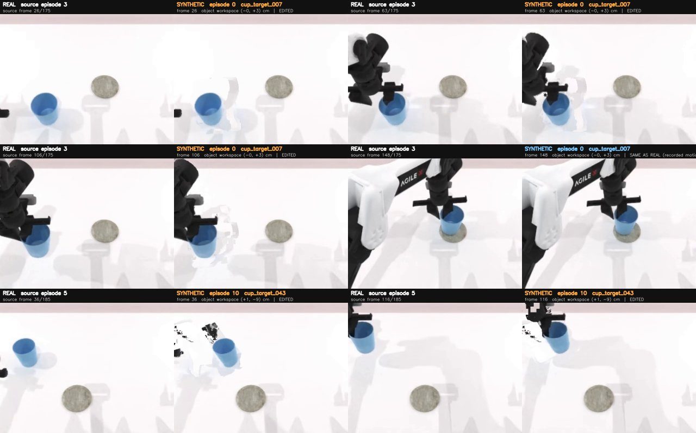

R02 · pipeline v1 (joint-space fallback)
2026-11-16 · Opus 5.5 · local, pending review · full text: R02_blend_space_pipeline_v1.md
OpenArm v0 episodes unchanged163/163OpenArm grid passes92 → 154RoboTwin cup0 → 71RoboTwin stack145/261LeRobot episodes222RGB qualityfragments
In plain words: each episode is first made exactly as before. Only when that fails a check is the motion re-made with a joint-space transit (exact gripper pose only near the grasp), which avoids the wrist twist at RoboTwin's folded start pose. It needs only the URDF. OpenArm's earlier episodes are unchanged; RoboTwin now yields episodes. The trajectories are valid, but RoboTwin's rendered images still show arm fragments, so the RGB is not yet training-quality.
OpenArm regression
| v0 | v1 | |
|---|---|---|
| grid passes | 92/416 | 154/416 |
| grid targets | 39 | 46 |
| interaction loc / timing | 60 · 11 | 62 · 11 |
| added episodes' distortion (median / max) | 0.868 / 3.759 | 0.847 / 3.721 |
RoboTwin datasets (LeRobot v3.0)
| task | object-position yield | episodes | frames |
|---|---|---|---|
| place_empty_cup | 71/339 | 60 | 10,401 |
| stack_blocks_two | 145/261 | 99 | 31,036 |
| handover_block | 0/363 (out of view); 63 interaction episodes | 63 | 17,849 |
What the frames look like

